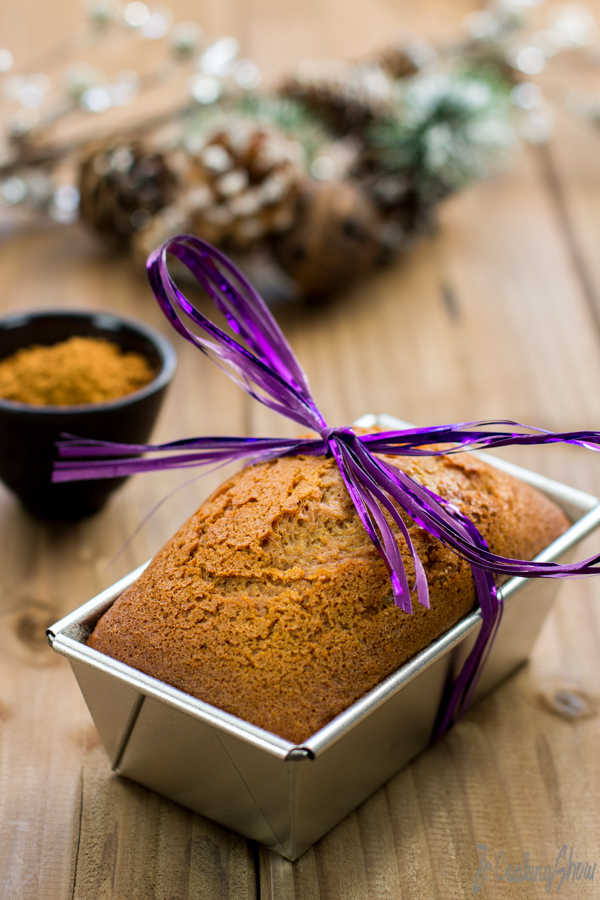

Pain d’épices au miel
Comment passer à coté du pain d’épices en cette fin d’année! Il fait froid, tout le monde s’active pour préparer les fêtes de fin d’année, alors pourquoi ne pas prendre une petite pause en famille autour d’un bon pain d’épices! Il existe beaucoup de recettes différentes, avec ou sans beurre, plus ou moins d’épices, avec des fruits et même des pépites de chocolat…En soit le pain d’épices est très facile à faire, mais la qualité la plus importante pour moi, est qu’il soit très moelleux, et très bien dosé en épices. Avec cette recette très simple, j’ai essayé de faire un pain d’épices bien moelleux, pas trop sucré et avec juste ce qu’il faut en beurre. J’ai personnellement choisi d’utiliser un mélange pour pain d’épices Albert Ménès, je le trouve plutôt bien dosé mais d’autres existes comme celui de Terre Exotique par exemple. Vous pouvez aussi faire votre mélange entre ces différentes épices: la cannelle, le gingembre, l’anis étoilé, la coriandre, les clous de girofle, la muscade, … Un ingrédient peu aussi totalement changer la saveur de votre pain d’épices, c’est le miel. J’ai utilisé du miel d’acacia qui est très doux et apprécié de tous mais vous pouvez très bien utiliser un miel plus corsé et plus fort comme du miel de châtaignier.